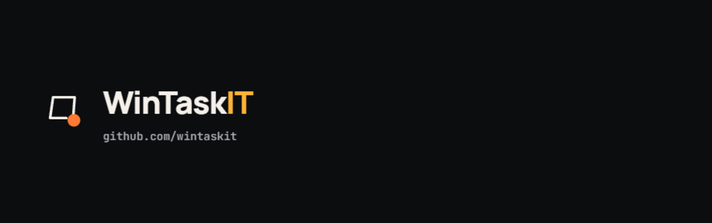
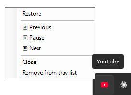
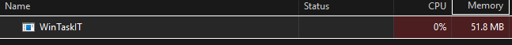

WinTaskIT
Sends specific app windows to the system tray instead of the taskbar when you minimize them. Always, or only while they're actually playing audio. Your choice, per app.
Why this exists
The motivating case is an installed web app window, YouTube as a Chrome "app," for instance. Minimizing it the normal way still leaves a taskbar button sitting there. Every native desktop media player solved "keep playing quietly and get out of my taskbar" a decade or two ago. Somehow the entire installed-web-app ecosystem, Chrome, YouTube, Google, all of it, never got around to shipping this natively. So here's a small third-party utility patching over a gap that a trillion-dollar company could have closed with about a day of engineering time.
Features
- Per-app tray rules. Choose, for each tracked window, whether it always goes to the tray on minimize or only while it's actively playing audio.
- Tray media controls. Play/Pause, Next, Previous, and Close right from the tray icon's right-click menu, no need to restore the window first.
- Works with any window, not just YouTube. Anything with an Application User Model ID, installed web apps/PWAs, Electron apps, most modern Windows apps, can be tracked.
- Invisible until needed. No persistent tray icon of its own; it only shows one for windows you've actually sent to the tray.
- Lightweight. Idles around 50 MB of memory and 0% CPU in Task Manager, no background services, no telemetry.
- No admin rights. Installs per-user via a normal installer wizard, nothing system-wide.
- Clean uninstall. Removing it undoes the startup entry, the Win+R shortcut, and all saved settings, no leftovers.
- Free and open source. MIT licensed, source on GitHub.
How it works
- Runs invisibly in the background. No persistent tray icon of its own.
- Watches minimizing windows system-wide for their Application User Model ID (AUMID), the same id Windows uses to identify installed web apps/PWAs.
- If that window is on your configured list, WinTaskIT hides it and shows a tray icon instead, either always, or only while it's actually producing sound, depending on how you set that entry up.
- Click the tray icon to restore the window. Right-click for Play/Pause, Next, Previous, Close, or to stop tracking it.
Good combo: pair WinTaskIT with uBlock Origin Lite. WinTaskIT keeps the tab alive quietly in the tray; uBlock Origin Lite keeps it from burning CPU and bandwidth on ads while it's out of sight and you're not there to close the popup anyway.
Settings
Launch WinTaskIT.exe a second time (or type wintaskit
into Win+R) to open Settings. From there you can add windows from what's
currently open, enable or disable individual entries, toggle "Run at
Windows startup," and right-click any entry to switch its tray behavior
between "Always send to tray" and "Only while playing audio."
Screenshots


Install
Download the setup zip from
the latest release,
unzip it, and run WinTaskIT-Setup.exe. It's a normal
Windows installer wizard, still no admin rights required, it installs
just for your user account (to %LocalAppData%\Programs\WinTaskIT),
not system-wide.
Uninstall
Uninstall it like any other app: Settings → Apps → Installed
apps → WinTaskIT → Uninstall. This also cleans up the startup
registration, the wintaskit Win+R shortcut, and all saved
settings. Alternatively, relaunch the exe to open Settings and click
Uninstall..., which does the same registry/settings
cleanup without removing the installed program files.
FAQ
- Does it only work with YouTube?
- No. YouTube-as-an-installed-app is the motivating case, but any top-level window with an AUMID can be tracked, including other installed web apps, PWAs, and most modern Windows apps.
- Does it need admin rights?
- No. It installs per-user to
%LocalAppData%\Programs\WinTaskIT, notProgram Files, and never asks for elevation. - Will it slow down my PC or use noticeable resources?
- No. It's a small, self-contained native app that sits idle watching window events until one you've configured tries to minimize, typically around 50 MB of memory and 0% CPU in Task Manager.
- Does it collect any data or phone home?
- No. There's no telemetry, network access, or account. Settings are
stored locally in
%AppData%\WinTaskIT. - How do I fully remove it, including settings?
- Uninstall from Windows Settings, or use the in-app Uninstall... button, either one clears the startup entry, the Win+R shortcut, and all saved settings. See Uninstall.